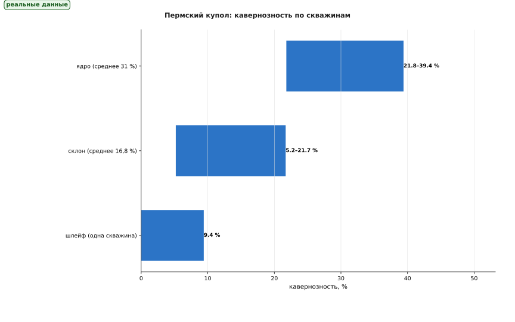
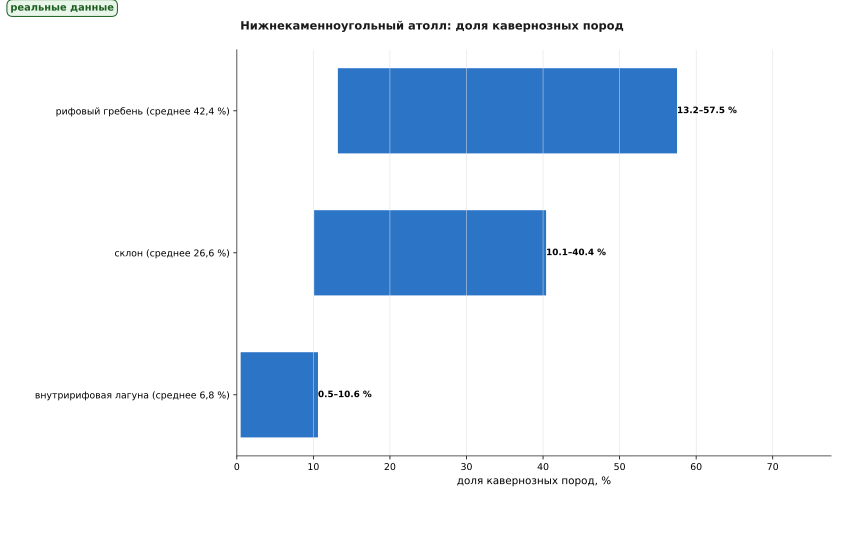

Путь › Когда лучшие коллекторы — на краю или вдоль рифа › Шаг 23 из 56
Карачаганак: купол и кольцо устроены по-разному
В книге: «Коллекторы рифа Карачаганак» стр. 209
Опирается на: шаг 16 «Когда лучший коллектор в центре рифа» (предпосылка), шаг 20 «Почему лучшие коллекторы у края рифа» (предпосылка, пример)
Суть
У рифа Карачаганак коллекторы распределены по-разному в интервалах разного возраста.
В пермском куполовидном рифе свойства ухудшаются от ядра к склону: меньше крупных пор, проницаемость, кавернозность и эффективная мощность.
В нижнекаменноугольном атолловидном рифе лучше всего рифовое кольцо, а внутренняя лагуна заметно хуже.
Пороговая идея. Не смешивать интервалы разного возраста и не подменять один показатель пустотности другим. модель
Разбор источника
Определите, где наблюдение, вывод или допущение. Раскройте утверждение, чтобы свериться с ответом и цитатой.
Распределение коллекторов меняется между возрастными интервалами Карачаганака.
Наблюдение · стр. 209
«Различно распределение коллекторов в разных возрастных интервалах рифа Карачаганак»
Пермская часть относится к периоду куполовидного рифа.
Наблюдение · стр. 209
«В пермской части, когда это был куполовидный риф»
Для пор размером более 0,1 мм в поровых коллекторах ядра доля достигает 30–31 %.
Наблюдение · стр. 209
«в его центральной биогермной зоне доля пор размером более 0,1 мм в поровых коллекторах составляет 30–31 %»
На склонах доля пор размером более 0,1 мм ниже: 18–19 %.
Наблюдение · стр. 209
«поровых коллекторах составляет 30–31 %, в то время как на склонах рифа она снижается до 18–19 %.»
От центральной зоны к склону средняя проницаемость поровых коллекторов снижается с 19–20 до 8·10⁻¹⁵ м².
Наблюдение · стр. 209
«Соответственно с этим средняя проницаемость поровых коллекторов в том же направлении снижается с 19–20 до 8·10⁻¹⁵ м².»
Кавернозность ядра по скважинам 21,8–39,4 %, в среднем 31 %.
Наблюдение · стр. 209
«в фациях рифового ядра кавернозность по скважинам колеблется в пределах 21,8–39,4 % при среднем значении 31 %.»
Кавернозность склонов 5,2–21,7 %, в среднем 16,8 %.
Наблюдение · стр. 209
«На склонах она изменяется в диапазоне 5,2–21,7 % при среднем значении 16,8 %»
В шлейфе кавернозность составляет 9,4 % по данным одной скважины.
Наблюдение · стр. 209
«а в отложениях шлейфа она составляет 9,4 % (данные одной скважины).»
Эффективная мощность падает с 67,6 % от общей в ядре до 27,8 % на склоне.
Наблюдение · стр. 209
«в ядре рифа она составляет 67,6 % от общей, а на склоне лишь 27,8 %.»
В нижнекаменноугольной части развит атолловидный риф.
Наблюдение · стр. 209
«Иная ситуация в нижнекаменноугольной части, где развит атолловидный риф.»
На рифовом гребне доля кавернозных пород по скважинам 13,2–57,5 %, в среднем 42,4 %.
Наблюдение · стр. 209
«Доля кавернозных пород в разных скважинах рифового гребня составляет 13,2–57,5 % (среднее 42,4 %)»
Во внутририфовой лагуне доля кавернозных пород 0,5–10,6 %, в среднем 6,8 %.
Наблюдение · стр. 209
«для фаций внутририфовой лагуны эти величины составляют 0,5–10,6 % при среднем значении 6,8 %»
На склоне атолла доля кавернозных пород 10,1–40,4 %, в среднем 26,6 %.
Наблюдение · стр. 209
«а для рифового склона соответственно 10,1–40,4 % и 26,6 %.»
Эффективная мощность в рифовом кольце составляет 61,1 %.
Наблюдение · стр. 209
«Эффективная мощность в рифовом кольце равна 61,1 %»
Эффективная мощность в лагуне составляет только 38,9 %.
Наблюдение · стр. 209
«в рифовом кольце равна 61,1 %, а в лагуне только 38,9 %.»
Как это работает
Два возраста — два типа рифа
Распределение коллекторов различается в разных возрастных интервалах рифа Карачаганак. В пермской части это был куполовидный риф, в нижнекаменноугольной — атолловидный. стр. 209
«Различно распределение коллекторов в разных возрастных интервалах рифа Карачаганак»
«В пермской части, когда это был куполовидный риф»
«Иная ситуация в нижнекаменноугольной части, где развит атолловидный риф.»
Пермский купол: поры и проницаемость
В центральной биогермной зоне доля пор крупнее 0,1 мм в поровых коллекторах составляет 30–31 %. На склонах она снижается до 18–19 %. стр. 209
«в его центральной биогермной зоне доля пор размером более 0,1 мм в поровых коллекторах составляет 30–31 %»
«поровых коллекторах составляет 30–31 %, в то время как на склонах рифа она снижается до 18–19 %.»
В том же направлении средняя проницаемость поровых коллекторов падает с 19–20 до 8·10⁻¹⁵ м². стр. 209
«Соответственно с этим средняя проницаемость поровых коллекторов в том же направлении снижается с 19–20 до 8·10⁻¹⁵ м².»
Пермский купол: кавернозность
Кавернозность — развитие каверн, крупных пустот. В фациях ядра она по скважинам 21,8–39,4 %, в среднем 31 %. На склонах — 5,2–21,7 %, в среднем 16,8 %. стр. 209
«в фациях рифового ядра кавернозность по скважинам колеблется в пределах 21,8–39,4 % при среднем значении 31 %.»
«На склонах она изменяется в диапазоне 5,2–21,7 % при среднем значении 16,8 %»

В отложениях шлейфа кавернозность 9,4 %. Но это данные лишь одной скважины, разброс по ним не оценить. стр. 209
«а в отложениях шлейфа она составляет 9,4 % (данные одной скважины).»
Пермский купол: эффективная мощность
Эффективная мощность в ядре составляет 67,6 % от общей, а на склоне лишь 27,8 %. стр. 209
«в ядре рифа она составляет 67,6 % от общей, а на склоне лишь 27,8 %.»
Нижнекаменноугольный атолл
Здесь автор приводит долю кавернозных пород. На рифовом гребне она по скважинам 13,2–57,5 %, в среднем 42,4 %. Во внутририфовой лагуне — 0,5–10,6 %, в среднем 6,8 %. На склоне — 10,1–40,4 %, в среднем 26,6 %. стр. 209
«Доля кавернозных пород в разных скважинах рифового гребня составляет 13,2–57,5 % (среднее 42,4 %)»
«для фаций внутририфовой лагуны эти величины составляют 0,5–10,6 % при среднем значении 6,8 %»
«а для рифового склона соответственно 10,1–40,4 % и 26,6 %.»

Эффективная мощность в рифовом кольце равна 61,1 %, а в лагуне только 38,9 %. стр. 209
«Эффективная мощность в рифовом кольце равна 61,1 %»
«в рифовом кольце равна 61,1 %, а в лагуне только 38,9 %.»
Нюанс: разные величины
Для пермского интервала дана кавернозность, а для нижнекаменноугольного — доля кавернозных пород. Это разные величины, их нельзя сравнивать напрямую. стр. 209
Разбор примеров из книги
Сравнение коллекторов пермского купола стр. 209
Условие. Карачаганак: пермская часть куполовидного рифа.
- Для пор размером более 0,1 мм сопоставить доли в поровых коллекторах ядра и склонов: 30–31 % и 18–19 %; проверить, как меняется проницаемость: с 19–20 до 8·10⁻¹⁵ м².
- Сопоставить кавернозность ядра и склонов: 21,8–39,4 % при среднем 31 % против 5,2–21,7 % при среднем 16,8 %; для шлейфа отметить 9,4 % по одной скважине.
- Сравнить эффективную мощность в долях от общей: 67,6 % в ядре и 27,8 % на склоне.
Итог. Показатели последовательно ухудшаются от ядра к периферии; значение в шлейфе не описывает разброс по скважинам.
Сравнение коллекторов в атолле стр. 209
Условие. Карачаганак: нижнекаменноугольный атолловидный риф.
- Сопоставить по скважинам долю кавернозных пород гребня: 13,2–57,5 %, среднее 42,4 %; лагуны: 0,5–10,6 %, среднее 6,8 %; склона: 10,1–40,4 %, среднее 26,6 %.
- Сопоставить эффективную мощность рифового кольца и лагуны: 61,1 % и 38,9 %.
Итог. Средняя доля кавернозных пород выше на гребне, чем на склоне и в лагуне; эффективная мощность выше в кольце, чем в лагуне.
Цифры и условия
- Купол: поры крупнее 0,1 мм — 30–31 % в ядре и 18–19 % на склонах. стр. 209
- Купол: проницаемость падает с 19–20 до 8·10⁻¹⁵ м² от ядра к склону. стр. 209
- Купол: эффективная мощность 67,6 % в ядре и 27,8 % на склоне. стр. 209
- Атолл: эффективная мощность 61,1 % в кольце и 38,9 % в лагуне. стр. 209
Что это значит для данных модель
Для Айгерим: возраст и положение в рифе — признаки контекста, а не взаимозаменяемые названия зон.
- Вход
- Возраст интервала, фация, скважина, вид метрики, значение и единица.
- Выход
- Отдельные профили свойств по возрастам и фациям.
- Где ломается
- При переносе зависимости купола на атолл или при объединении несопоставимых метрик.
- гипотеза Учет интервала и положения в рифе может уменьшить ошибки при переносе модели между скважинами.
Где здесь ручной труд специалиста
- Входные данные
- Интервалы по скважинам и таблицы свойств.
- Ручные шаги
- Сопоставить возраст, зону и показатель; проверить единицы; подготовить сравнения.
- Точки суждения
- Проверить сопоставимость метрик и представительность отдельных скважин.
- Время
- Зависит от полноты привязок к возрасту и фации.
- Типичные ошибки
- Усреднить все интервалы или считать наблюдение шлейфа полноценным диапазоном.
Аналогия модель
Сводите показатели как многомерную таблицу: отдельно группируйте по возрасту, зоне и виду метрики.
Где аналогия перестаёт работать: Строки из разных скважин не обязаны быть независимыми, а зоны могут быть недостаточно опробованы.
Как это делается сейчас модель
Хранить диапазон, среднее, размер выборки, тип пустот и интервал по отдельности; проверять переносимость результатов, исключая из обучения целые скважины.
Глубже
Как не спутать знаменатели модель
Доля крупных пор, кавернозность, доля кавернозных пород и доля эффективной мощности отвечают на разные вопросы. Подписывайте к каждому значению, какая величина и от какой совокупности рассчитана.
Новые понятия
- Коллектор
- Порода с пустотами, способная вмещать и пропускать флюид — жидкость или газ. модель
- Фация
- Часть отложений, по признакам которой восстанавливают определённую обстановку её формирования. модель
- Пористость
- Доля объёма породы, занятая пустотами. модель
- Проницаемость
- Способность породы пропускать жидкость или газ через сообщающиеся пустоты. модель
- Биогермная зона
- Область карбонатной постройки, образованной на месте организмами. модель
- Кавернозность
- Характеристика развития каверн — сравнительно крупных пустот в породе. модель
- Эффективная мощность
- Толщина частей разреза, отнесённых к коллектору. модель
- Рифовый шлейф
- Отложения вокруг основания рифа, в том числе материал, вынесенный со склона. модель
- Атолловидный риф
- Риф кольцевой формы с внутренней лагуной. модель
- Лагуна
- Внутренняя область, в данном случае окружённая рифовым кольцом. модель
- Рифовый гребень
- Возвышенная полоса постройки. модель
Проверь себя
%
Верный ответ: 67,6 %
В ядре 67,6 % от общей мощности, а на склоне лишь 27,8 %. Где это в тексте (стр. 209) →
Верный ответ: Во внутририфовой лагуне
В лагуне 0,5–10,6 % (среднее 6,8 %) против 42,4 % на гребне и 26,6 % на склоне. Где это в тексте (стр. 209) →
Верный ответ: Это данные только одной скважины
Одна скважина не показывает разброс по зоне. Где это в тексте (стр. 209) →
Источник
Все утверждения шага с дословной цитатой автора и страницей книги (по PDF).
Распределение коллекторов меняется между возрастными интервалами Карачаганака. наблюдение
«Различно распределение коллекторов в разных возрастных интервалах рифа Карачаганак»
Пермская часть относится к периоду куполовидного рифа. наблюдение
«В пермской части, когда это был куполовидный риф»
Для пор размером более 0,1 мм в поровых коллекторах ядра доля достигает 30–31 %. наблюдение
«в его центральной биогермной зоне доля пор размером более 0,1 мм в поровых коллекторах составляет 30–31 %»
На склонах доля пор размером более 0,1 мм ниже: 18–19 %. наблюдение
«поровых коллекторах составляет 30–31 %, в то время как на склонах рифа она снижается до 18–19 %.»
От центральной зоны к склону средняя проницаемость поровых коллекторов снижается с 19–20 до 8·10⁻¹⁵ м². наблюдение
«Соответственно с этим средняя проницаемость поровых коллекторов в том же направлении снижается с 19–20 до 8·10⁻¹⁵ м².»
Кавернозность ядра по скважинам 21,8–39,4 %, в среднем 31 %. наблюдение
«в фациях рифового ядра кавернозность по скважинам колеблется в пределах 21,8–39,4 % при среднем значении 31 %.»
Кавернозность склонов 5,2–21,7 %, в среднем 16,8 %. наблюдение
«На склонах она изменяется в диапазоне 5,2–21,7 % при среднем значении 16,8 %»
В шлейфе кавернозность составляет 9,4 % по данным одной скважины. наблюдение
«а в отложениях шлейфа она составляет 9,4 % (данные одной скважины).»
Эффективная мощность падает с 67,6 % от общей в ядре до 27,8 % на склоне. наблюдение
«в ядре рифа она составляет 67,6 % от общей, а на склоне лишь 27,8 %.»
В нижнекаменноугольной части развит атолловидный риф. наблюдение
«Иная ситуация в нижнекаменноугольной части, где развит атолловидный риф.»
На рифовом гребне доля кавернозных пород по скважинам 13,2–57,5 %, в среднем 42,4 %. наблюдение
«Доля кавернозных пород в разных скважинах рифового гребня составляет 13,2–57,5 % (среднее 42,4 %)»
Во внутририфовой лагуне доля кавернозных пород 0,5–10,6 %, в среднем 6,8 %. наблюдение
«для фаций внутририфовой лагуны эти величины составляют 0,5–10,6 % при среднем значении 6,8 %»
На склоне атолла доля кавернозных пород 10,1–40,4 %, в среднем 26,6 %. наблюдение
«а для рифового склона соответственно 10,1–40,4 % и 26,6 %.»
Эффективная мощность в рифовом кольце составляет 61,1 %. наблюдение
«Эффективная мощность в рифовом кольце равна 61,1 %»
Эффективная мощность в лагуне составляет только 38,9 %. наблюдение
«в рифовом кольце равна 61,1 %, а в лагуне только 38,9 %.»